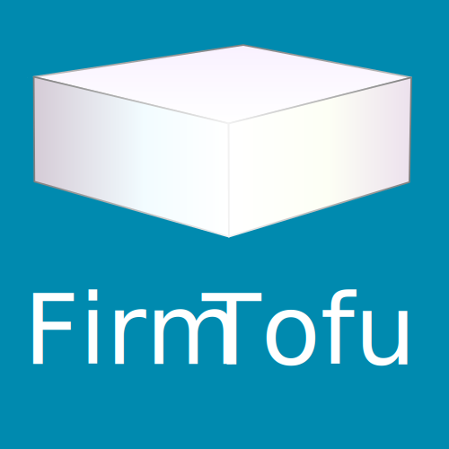
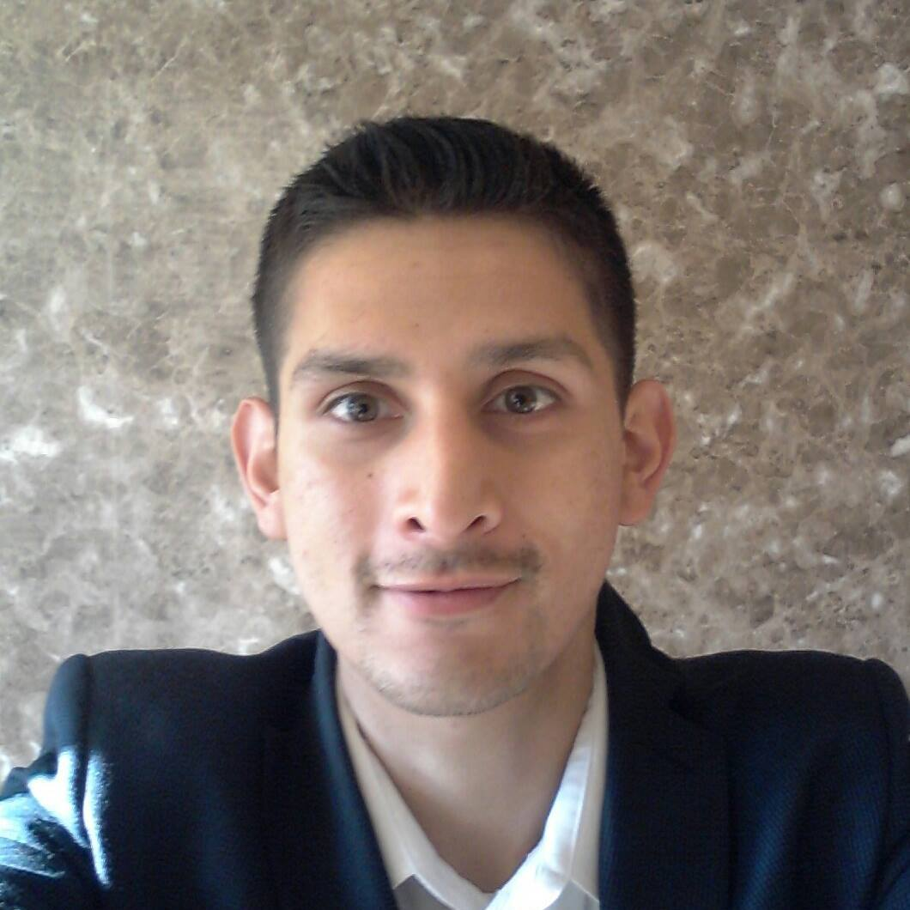

2.5 billion people in the world consider themselves to be aspirational customers
Veganism has more than doubled in the past 3 years going from 1% of the US population to 2.5%
Wealthy investors see the potential profit in vegan businesses
“Even more telling, a growing roster of food-tech startups, some backed by serious venture money and socially minded billionaires such as Bill Gates, are innovating plant-based products to replace meat, eggs and dairy. They’re addressing growing concerns about the planet’s continued ability to feed an exploding world population with animal products as water resources and available land grow scarcer and climate change escalates. They’re also showing concern for animal welfare, and yes, these entrepreneurs and their investors are hoping to make some money in the process” –Sebastiano Castiglioni, “Vegan Investor”, Forbes
Problem
Everyday new vegan businesses are popping up here in LA and all over the world, businesses that often either through lack of funds or lack of knowledge end up with very poor branding and websites.
Solution

A design firm of vegans for vegans that provides all the marketing, branding, web design and development services needed to help start and grow a business.
Business Model
Our Team

John Flores
Marketing
Alyson Burton
Branding, UI/UX & Front-end Development
David Kong
Back-end Development
Business Model con't
Start local
Approach new and current vegan businesses offering our services
Slowly build up to a point in which we can rent a physical local and start hiring more staff
Get to the point where the design firm is running sucessfully on its own, then branch out to Portland and finally a remote firm employing vegans all over the world
Underlying Magic
"People do not buy goods and services. They buy relations, stories and magic"
– Seth Godin, Entrepreneur
Our business will be successful because:
It's not just a business
No competition
Community Days: we will spend 1-2 paid days a month giving back to the community
Philanthropy: A portion of all proceeds will benefit animal welfare organizations
Financial Projections & Key metrics
Start by splitting profit 3 ways
As business grows, hire a Finance Manager
Competitive Salary for employees with benefits
Pricing: Start case by case, then develop packages based on the demand we see
Current Status
Currently in the process of branding & website development